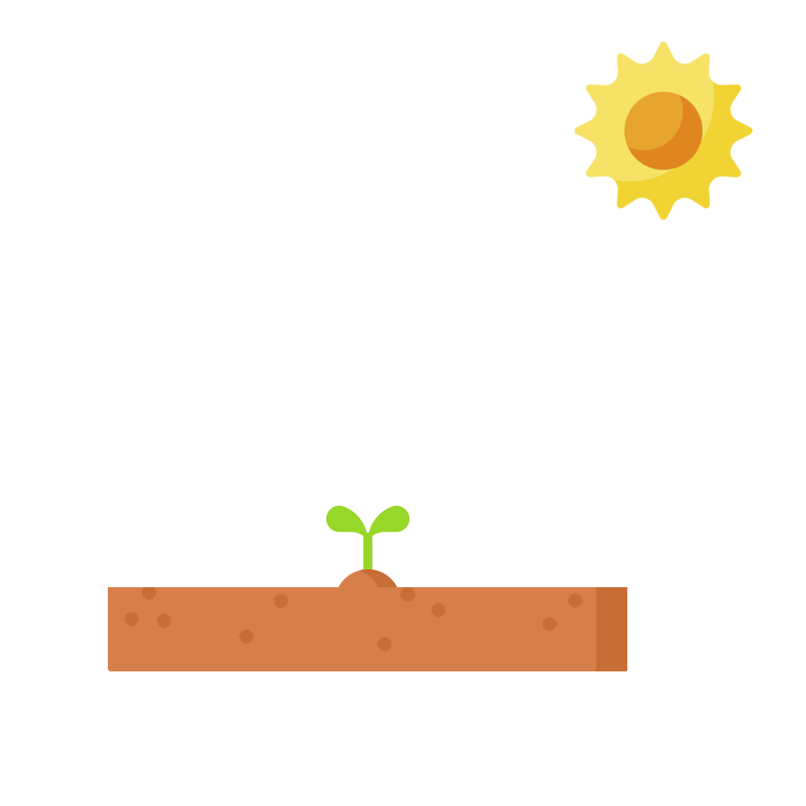
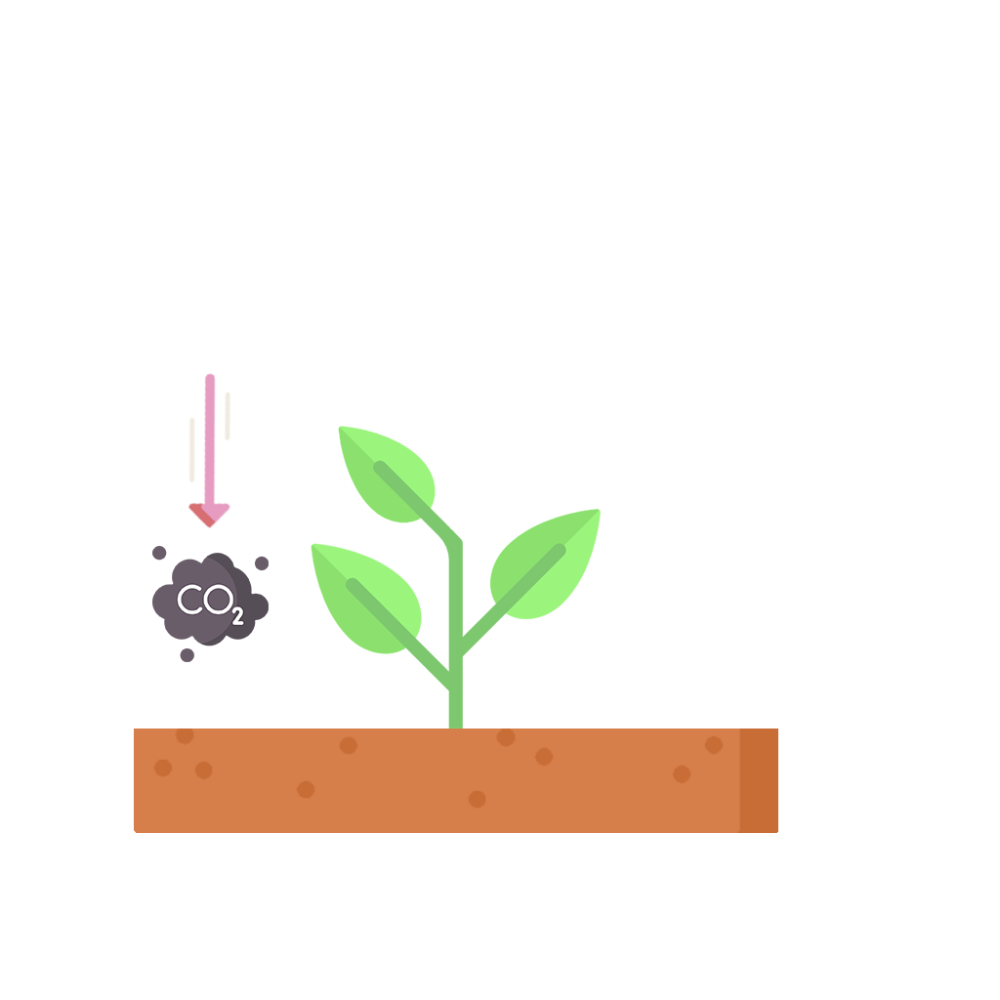

A plant's life starts out from a seed, which stores all genetic information needed for growth and defining the species.
There are about 382,000 plant species in the world ranging in size from single cells to tallest trees.
When a seed is planted, there are certain conditions needed in order for the plant to grow:
Soil provides a stable base for the plant to grow and most importantly acts as a source for nutrients
Sun charges the plant with energy to use it for future chemical reactions
Water acts as a solvent and helps with the transportation of the nutrients to various parts of the plant
Carbon Dioxide (CO2) is absorbed through the plants' leaves and acts as a reactant to produce glucose when reacted with water. Glucose is used for further plant growth.
Oxygen (O2) is the byproduct of the reaction and serves an important role for other organisms
This process of transforming light energy to chemical energy is called photosynthesis
Graph explanation
Graph explanation
Graph explanation